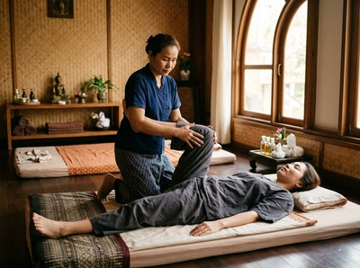

Thai massage in Kelvinbridge speaks directly to the people who live and work in one of Glasgow's most characterful corners.
Kelvinbridge sits at the eastern edge of the West End, where Great Western Road crosses the River Kelvin. It's a neighbourhood of sandstone tenements, independent cafes, vintage shops, and riverside green space. It draws University of Glasgow students, academic staff, creative professionals, and long-term residents.
Serendipity Massage Therapy & Wellness, based on Hope Street in Glasgow City Centre, is well placed to serve anyone coming in from this part of the West End.
Kelvinbridge is one of Glasgow's most vibrant neighbourhoods, and the people here tend to lead full, active lives. Students, city commuters, and creatives all share one thing: a body that builds up tension over time. Traditional Thai massage works through acupressure, assisted stretching, and pressure along the body's sen lines.
It targets deep muscle tension in a way a rest day simply cannot. Serendipity's therapists are trained to a consistent standard using techniques developed by head therapist Jariya Malone.

Kelvinbridge is home to a large number of people carrying postural strain. Desk work, long study sessions, and hours in front of a screen all take a toll.
A regular session at Serendipity can address neck pain, shoulder tension, and lower back stiffness before they become chronic. You can book your session online and be seen the same week, or sometimes the same day.
Serendipity offers a full menu of massage and wellness treatments, each suited to different needs and preferences:
The easiest route from Kelvinbridge is via the Glasgow Subway. From Kelvinbridge Subway Station on South Woodside Road, take the Outer Circle one stop to St Enoch.
From there, Serendipity at Central Chambers, 93 Hope Street is around five minutes on foot. Door to door, the journey takes roughly ten to fifteen minutes.
Several bus routes also connect Kelvinbridge to the city centre, including the 4, 6, 15, and 17. These drop you within easy walking distance of Hope Street.
Kelvinbridge is also a manageable cycle into the centre, making a mid-day or post-work appointment easy to fit around a busy day.
Serendipity is not a sole trader or a chain spa. It is a professional team practice where every therapist is trained to the same standard, using techniques developed by Jariya Malone.
That consistency matters. Whether you are visiting for the first time or returning for a regular session, the level of care stays the same.
The studio is in Central Chambers on Hope Street, in the heart of Glasgow's professional district. It is a calm, unhurried space, easy to reach from across the West End and the wider city.
Book a treatment online and choose the time and therapist that suits you.
The neighbourhood takes its name from the Victorian cast iron bridge that carries Great Western Road over the River Kelvin. Completed in 1891 and now Category A listed, the bridge is as much a symbol of the area as it is a piece of infrastructure.
You can read more at Kelvinbridge on Wikipedia. The area has grown into one of Glasgow's most celebrated urban neighbourhoods, named by Time Out as one of the coolest in the world in recent years.
Serendipity is based at Central Chambers, 93 Hope Street, in Glasgow City Centre. From Kelvinbridge, the journey takes around ten to fifteen minutes by Subway. Travel one stop on the Outer Circle from Kelvinbridge Station to St Enoch, then walk five minutes along Hope Street to the studio.
The Subway is the most straightforward option. Kelvinbridge Subway Station is on South Woodside Road, just off Great Western Road, and connects directly to St Enoch in the city centre. Several bus routes, including the 4, 6, 15, and 17, also run from the Kelvinbridge area into the city centre and stop near Hope Street.
Same-day appointments are sometimes available, depending on the therapist and session type. The easiest way to check is through the online booking page, which shows live availability. Booking ahead by a few days gives you the best choice of times and therapists.
Traditional Thai massage works well for people who spend long hours sitting. It uses assisted stretching and acupressure to release tension in the neck, shoulders, and lower back. Thai oil massage is a strong option too, if you prefer a more flowing style. Your therapist will talk through what you need at the start of your session.
Serendipity offers daytime and evening slots throughout the week. For current availability, check the online booking page, which shows real-time appointment times. You can also call the studio on 0141 673 6630 if you would prefer to speak to someone directly.